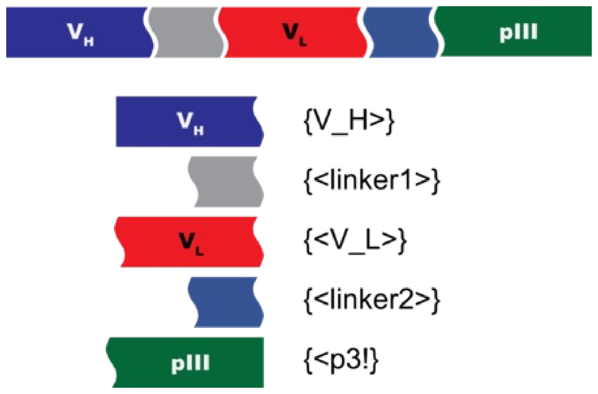
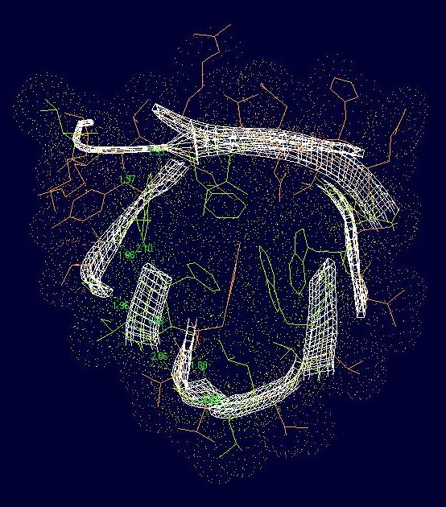

Directed Evolution
YouTube playlist:
youtube.com/watch?v=1wWyTrUroGM&list=PL2aPXzks-TgOOPfxneYJ3pBwTlqzv9Ezn
YouTube playlist:
youtube.com/watch?v=1wWyTrUroGM&list=PL2aPXzks-TgOOPfxneYJ3pBwTlqzv9Ezn

openwetware.org/wiki/Arking:JCAOligoTutoria20
An optional tutorial on translational fusions: five parts — a heavy chain variable domain, a linker, a light chain variable domain, a second linker and pIII — joined into one open reading frame, with the part name for each.